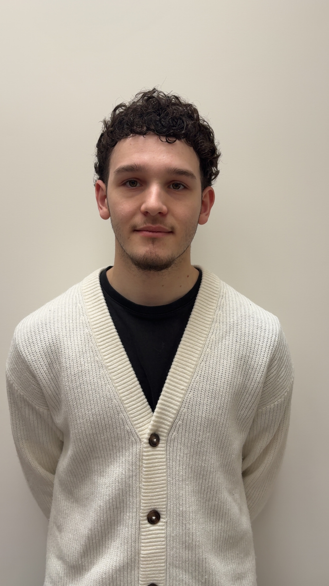

Axel met largement en confiance pendant les cours ! Poser des questions et mettre en avant mes difficultés m’a permis de les dépasser. Ainsi j’ai gagné + 4 points de moyenne en maths. De plus, grâce à ses méthodes claires, les exos difficiles devenaient plus faciles à résoudre et faire des maths devenaient alors beaucoup plus intéressant !
Ils ont choisi GammaLearn • Ils ont progressé • Ils racontent
Témoignages d’étudiants; +30 étudiants formés
Des retours simples, concrets, et ce que ça a changé pour eux.
Les cours de maths sont vraiment bien! Le rythme est adapté pour que je puisse retravailler ce que je maîtrise ou non et Axel m’aide à mieux comprendre et visualiser des notions abstraites que je ne maîtrise pas toujours très bien. Son accompagnement me permet de mieux assimiler les notions et les méthodes de base, d’adopter de bons réflexes de raisonnement et d’être plus à l’aise dans la résolution des exercices.

J’ai décidé de prendre des cours avec Axel pour combler mes lacunes et m’aider à travailler les maths. Axel a très bien répondu à mes attentes, avec un investissement élevé, une superbe pédagogie, et des résultats : En réussissant à doubler ma moyenne pendant les deux années de classes préparatoires.
J’ai contacté Axel quelques mois après mon entrée en prépa, car j’avais identifié certaines lacunes en mathématiques. Il fait preuve d’une réelle pédagogie et illustre les notions par des exemples pertinents qui facilitent leur assimilation. Grâce à son accompagnement, j’ai pu améliorer mes résultats rapidement. Il sait s’adapter aux besoins spécifiques de chacun et se montre particulièrement disponible.
Actuellement en suivi pour les mathématiques avec Axel, je n’ai que du bien à en dire, on à l’occasion de revenir sur les cours, de faire des exercices ensemble et ça me permet de bien comprendre grâce à ses explications claires.